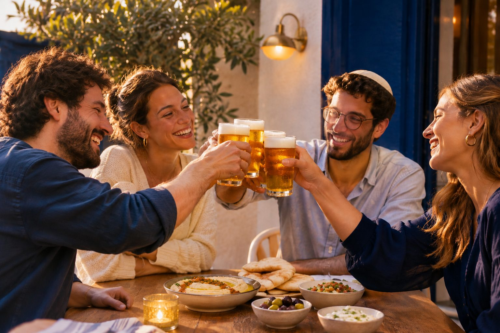
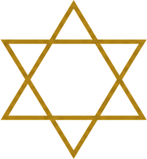

Culture
Une identité juive reconnaissable et assumée. L'hébreu figure sur chaque bouteille, à côté du français : le nom, le texte et les ingrédients.
LECHAIM
Ce site présente des boissons alcoolisées. Son accès est réservé aux personnes majeures.
Une bière artisanale inspirée par la culture du partage, de la fête et de la transmission.
לחיים — À la vie !

Lechaim (לחיים), c'est bien plus qu'un mot : c'est une invitation à célébrer la vie, les rencontres et les bons moments.
Le mot vient de חיים, haïm, « la vie », précédé de ל, « à ». C'est le toast que l'on porte autour d'une table juive, pour une naissance, un mariage, des retrouvailles ou simplement parce que l'on est ensemble.
Nous voulons des bières modernes et accessibles, qui allient savoir-faire artisanal et exigence. Une bière se partage, et le moment compte autant que ce qu'il y a dans le verre.


Le projet
Lechaim est née à Saint-Maur-des-Fossés d'une envie simple : faire une bière qui porte la culture juive avec fierté, de façon jeune, sobre et contemporaine.
Le projet est porté par Ianis Perez, cofondateur de Rupture Brewing Company, brasserie artisanale de Saint-Maur-des-Fossés. À valider : nom et lien affichés, rôle de Rupture Brewing dans le brassage.
Tout part d'un geste familier, celui de lever son verre avec d'autres. Les premières fois, les grandes retrouvailles, les verres qui se lèvent ensemble : c'est pour ces moments-là que Lechaim existe.
Ce qui nous guide
Une identité juive reconnaissable et assumée. L'hébreu figure sur chaque bouteille, à côté du français : le nom, le texte et les ingrédients.
Une bière pensée pour la table et pour les autres. Légère en alcool, elle accompagne un repas sans prendre toute la place.
Les amis qu'on n'a pas vus depuis longtemps, la famille réunie, la première bière d'une nouvelle histoire.
L'identité
Le bleu vient des grands aplats de l'étiquette, le crème du papier, l'or des détails. Le nom LECHAIM est écrit en capitales bleues étroites, l'hébreu en doré entre deux filets fins.
Au-dessus du nom, une étoile de David dessinée d'un seul trait, volontairement ouverte dans sa partie basse. Un signe reconnaissable, tracé avec légèreté.
Coulisses
Avant d'arriver sur la bouteille, l'étiquette Lechaim a connu plusieurs vies. Retour sur deux mois de recherches.
En octobre, les premières propositions ont exploré des directions très différentes : une grande tablée illustrée où les convives lèvent leur verre, une étiquette crème à la typographie fine, une autre plus graphique en bleu, crème et or.
En novembre, trois de ces pistes ont été déclinées en identités complètes, avec une page de site et un aperçu de compte Instagram pour chacune. C'est la direction bleu, crème et or qui a été retenue : un nom en grandes capitales bleues, l'hébreu לחיים en doré, une étoile de David au trait, ouverte en bas.
L'étiquette définitive mesure 187 × 85 mm et fait le tour du corps de la bouteille. Le centre porte le nom et le bandeau bleu « Pale Ale – Blonde ». Sur les côtés, le texte et les ingrédients sont écrits en français et en hébreu. La relecture bilingue a porté jusqu'aux derniers mots, comme la traduction de « CO₂ » en hébreu.
Le fichier est parti chez l'imprimeur en novembre 2026.